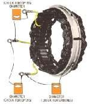

You smell burning varnish near the left engine cover, the stator connector is dark brown or melted, or the oil smells burnt. The stator is the ring of copper coils behind the flywheel that makes power for charging. When a coil overheats, its varnish insulation burns, turns dark and smells. Usually charging is low or gone at the same time. Causes include a poor connector, a failing regulator, a shorted coil, or heavy electrical loads.
Is it safe to ride?
No. A burning smell can mean a fire risk, and the battery will soon go flat. Find the source before riding.
Quick checks first
- Key OFF. Look for smoke and melted wiring first: if anything is burning, move away and use an extinguisher.
- Follow the stator wires from the left engine cover to their connector. Are the pins dark or melted?
- Is the regulator plug also burnt?
- Does the engine oil smell burnt or look darker than its age?
- Have extra lights or accessories been added?
Diagnose it step by step
1Is the smell coming from melted wiring somewhere other than the stator?
- Yes: see Burning smell from the wiring.
- No: go to step 2.
2Is the stator connector or regulator connector burnt?
- Yes: replace the terminals or connector. Clean and seal electrical connectors. Then go to step 3.
- No: go to step 3.
3Do all three stator wire pairs read the same and in range, with no continuity to earth? (K-Light 125: 0.8 ± 0.3 Ω at 20 °C)
- No: the stator is damaged. Replacement is a workshop job (flywheel removal). Test the stator (generator coils).
- Yes: go to step 4.
4Does the regulator pass its checks?
- No: replace it. A failing regulator can overload the stator. Test the regulator rectifier.
- Yes: go to step 5.
5After the repair, is the charging voltage in range? (K-Light 125: 14.5 ± 0.5 V at 5000 rpm)
- No: recheck the connectors and both parts. Test the charging system.
- Yes: check the battery, which may be damaged: Test and charge a 12 V battery.
6If the stator runs in oil, was the oil dark or burnt-smelling?
- Yes: change the oil after the repair and look for insulation flakes. Inspect drained oil for clues.
Ask the workshop replacing the stator to fit a new cover gasket, check the flywheel magnets and key, and use the confirmed torque values for your engine.
Causes, most likely first
| Cause | How to confirm | Fix |
|---|---|---|
| Poor connector between stator and regulator | Dark or melted pins | Clean and seal electrical connectors |
| Shorted stator coil | Uneven resistance or short to earth | Test the stator (generator coils) |
| Failing regulator | Diode test fails | Test the regulator rectifier |
| Overload from added lights | Extra lamps fitted | Remove or fit low-power lamps |
Reference values (K-Light 125)
| Item | Value | PDF page |
|---|---|---|
| Stator charging coil | 0.8 ± 0.3 Ω at 20 °C | 80 |
| Charging voltage | 14.5 ± 0.5 V at 5000 rpm | 78 |